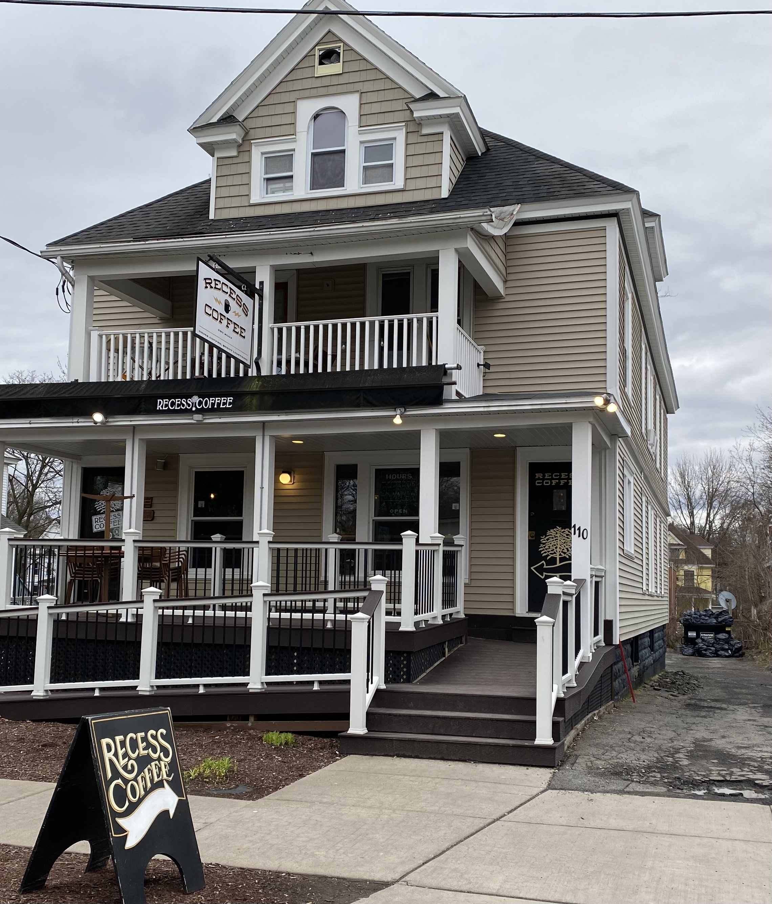
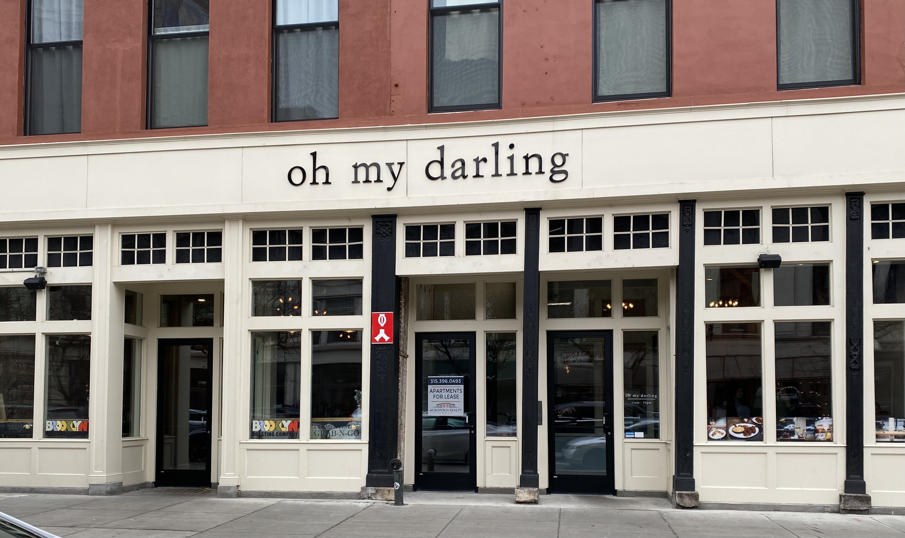
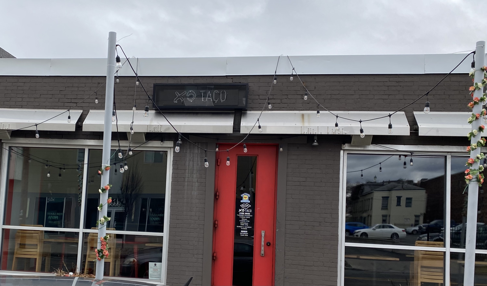
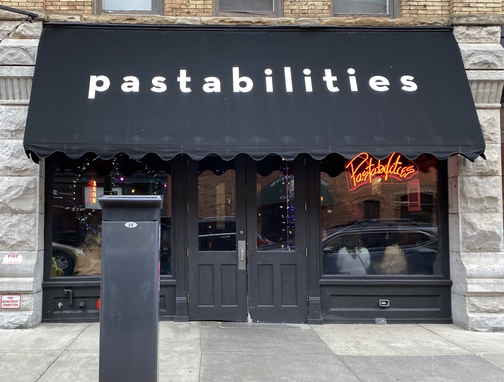
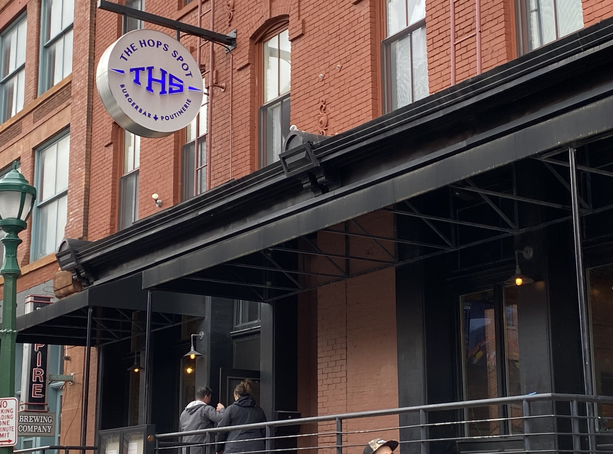

Discovering Syracuse, NY: Must See Restuarants
-

Recess Coffee
• Recess is the must have breakfast in Syracuse. It is close to campus, there is indoor and outdoor seating, and there are so many options. Recess has a wide variety of coffees, ranging from cold brews to lattes that are sure to improve your morning. Recess also has quality breakfast sandwiches. They are made fresh when you order and taste great! My favorite is the sausage, egg, and cheese on whole wheat bread.
-

Oh My Darling
• Oh My Darling I would describe as the perfect place for a girls night. The food is expensive, beware, but it is certainly worth it. The restaurant is in armory square and is decorated like a vintage café inside. They have delicious salads, sandwiches, and appetizers. The Brussel sprouts there are to die for!!
-

XO Taco
• You can’t be a Syracuse student if you haven’t had xo taco. Taco Thursdays at XO are a must. The deals are unbeatable, $5 margs and $5 tacos all night. The tacos are incredible and there are so many different options.
-

Pastabilities
• Pastabilities is the place to take your family on family weekend. It is a Syracuse staple, right in the heart of Armory Square. The pastas are expensive, but the portions are big and the options are really unique. The spicy red sauce is my favorite.
-

The Hops Spot
• The Hops Spot is a gameday highlight. The atmosphere of the American restuarant is lively and enetertaining. Grab a burger, sandwich, or some homeade poutine and enjoy a Syracuse sports game!